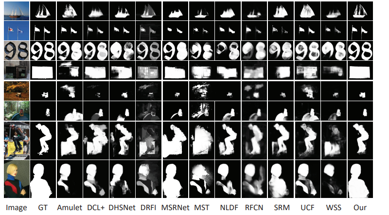
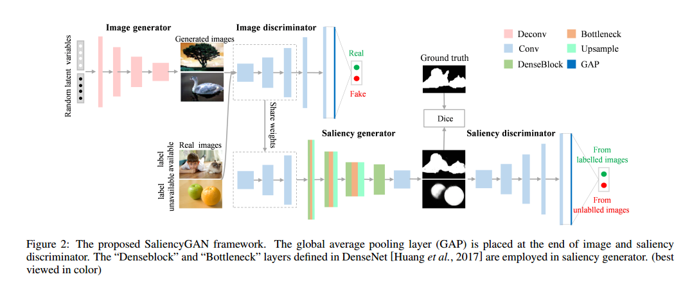
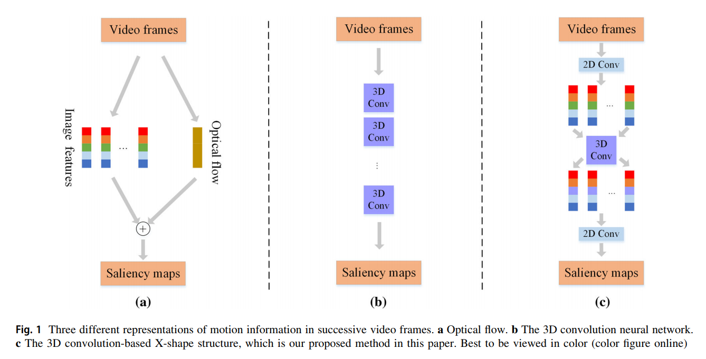
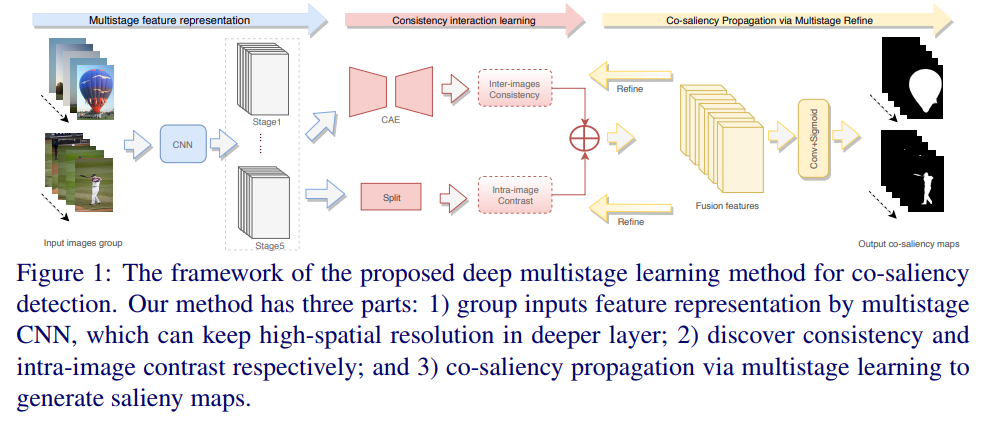
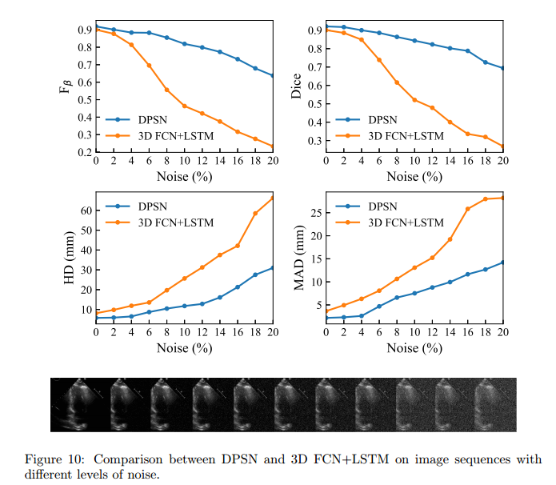
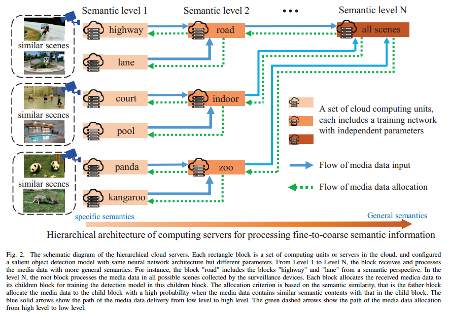

2020 年毕业于中国科学院大学深圳先进技术研究院计算机专业，目前在长线科技（重庆）工作。 过往经历覆盖大语言模型微调与偏好对齐、人脸人体时空聚类、超高客流统计，以及显著性检测与语义分割方向的研究。
聚焦产业化算法研发，覆盖大模型训练、时空建模和高并发统计场景。
研究方向集中在显著性检测、视频理解、共显著性建模与医学影像分割。

性能位于行业领先水平，分割边缘准确，不需要预训练。
查看 PDF
减少 70% 标注数据，3K 标注图像训练即可逼近 10K 全监督方法水平。* 共同一作。
查看 PDF
一种简单有效的运动信息建模方式。
查看 PDF
通过自编码器对多张图像中的相似内容进行联合建模。
查看 PDF
面向超声心电图序列的精准、鲁棒自动分割方案。

从不同语义层级出发构建分布式显著性检测框架。
Pytorch、Transformers、Python、C、C++、SQL
云从科技入职培训第一名，中国科学院大学三好学生与所长奖学金，重庆邮电大学优秀学生奖学金、优秀班干部、操作系统单科第一名。
英语六级。
显著性检测、语义分割、半监督学习、时空聚类、大模型对齐。